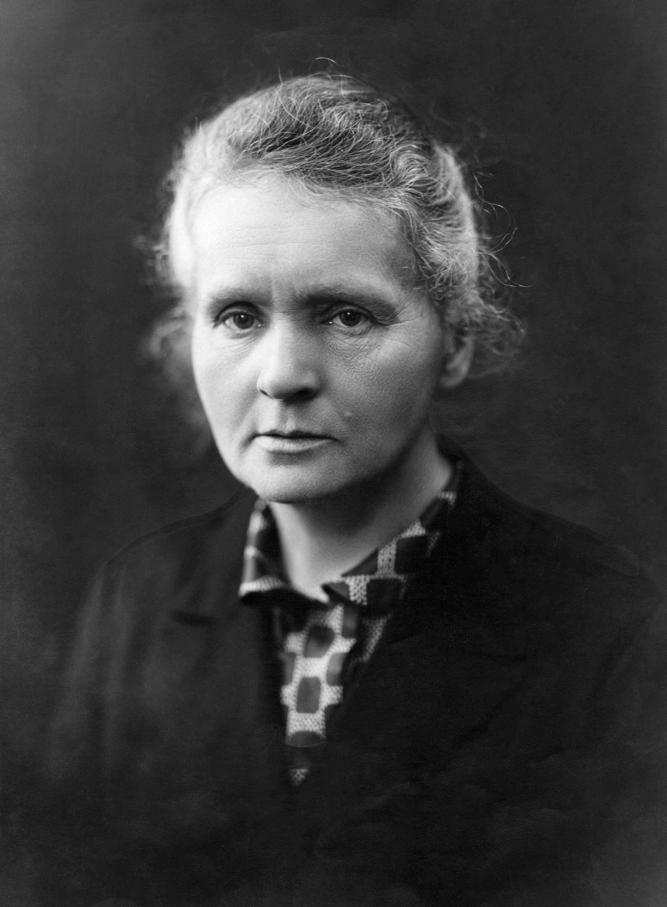
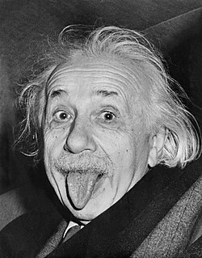
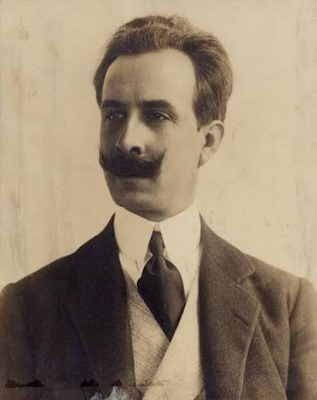

Cerne Social
A ciência ao serviço do cidadão. Da saúde pública à educação acessível, cada avanço científico deve retornar à sociedade sob forma de bem-estar, dignidade e oportunidades iguais para todos.
Celebrando o poder transformador da ciência na construção de sociedades pacíficas, sustentáveis e prósperas. Uma data para refletir, agir e inspirar o futuro.
Cada descoberta científica desencadeia uma reação em cadeia de progresso, iluminando o caminho para a paz.
A ciência não conhece fronteiras. Quando um pesquisador em Lisboa descobre uma nova forma de purificar água, uma comunidade no interior do Brasil tem acesso a água potável. Quando físicos no CERN colaboram além de diferenças políticas, a diplomacia científica prova que a linguagem dos dados é universal.
Este dia 10 de Novembro nos lembra que cada equação resolvida, cada vacina desenvolvida, cada satélite lançado para monitorar o clima, é um ato de esperança prática. A paz não é apenas ausência de conflito; é presença de conhecimento compartilhado.
O desenvolvimento sustentável nasce quando a ciência serve o ser humano. Energia limpa para vilarejos remotos. Agricultura de precisão para alimentar milhões. Tecnologias acessíveis que reduzem desigualdades. A ciência é a ponte entre o mundo que temos e o mundo que merecemos.
Três forças fundamentais que movem o progresso global, interligadas como átomos em uma molécula de esperança.
A ciência ao serviço do cidadão. Da saúde pública à educação acessível, cada avanço científico deve retornar à sociedade sob forma de bem-estar, dignidade e oportunidades iguais para todos.
Desenvolvimento ecológico e sustentável. Fusão nuclear, solar de nova geração, baterias de estado sólido a revolução energética que permite crescer sem destruir o planeta que nos sustenta.
A ciência como linguagem universal. Colaborações transfronteiriças no CERN, estação espacial internacional, genoma humano provam que quando cientistas dialogam, as nações encontram caminhos para a paz.
Visionários cujo trabalho transcendeu fronteiras, salvou milhões de vidas e provou que o conhecimento é a maior força para a paz.

1867 a 1934 • Polônia/França
Única pessoa a ganhar Nobel em duas ciências diferentes (Física 1903, Química 1911). Pioneira na radioatividade, seu trabalho salvou incontáveis vidas na medicina. Durante a WWI, desenvolveu unidades móveis de raio-X para hospitais de campanha.

1879 a 1955 • Alemanha/EUA
Relatividade geral transformou nossa compreensão do universo. Pacifista convicto, assinou o Manifesto Russell Einstein (1955) alertando para perigos nucleares. Sua carta a Roosevelt (1939) iniciou o Projeto Manhattan, mas depois arrependeu-se e advogou pelo desarmamento.
1930 presente • China
Descobriu a artemisinina, tratamento revolucionário contra malária que salvou milhões de vidas no mundo em desenvolvimento. Prêmio Nobel de Fisiologia/Medicina 2015. Sua pesquisa combinou medicina tradicional chinesa com ciência moderna exemplo perfeito de ciência a serviço da humanidade.

1926 a 1996 • Paquistão/Reino Unido
Nobel de Física 1979 (eletrofraco). Fundou o ICTP (Centro Internacional de Física Teórica) em Trieste, criando ponte para cientistas do Sul Global. Primeiro muçulmano a ganhar Nobel científico. Dedicou vida a reduzir a desigualdade científica entre nações ricas e pobres.
1964 presente • EUA
Co descobridora do CRISPR Cas9, revolucionando edição genética. Nobel de Química 2020. Líder na ética da edição genômica, defende uso responsável para curar doenças genéticas. Exemplo de ciência de fronteira com responsabilidade social.

1879 a 1934 • Brasil
Descobriu a doença de Chagas (1909), identificando parasita, vetor, hospedeiro e sintomas feito único na parasitologia. Fundou o Instituto Oswaldo Cruz. Pioneiro em saúde pública tropical, seu trabalho salva vidas na América Latina até hoje. Símbolo da ciência brasileira a serviço do povo.
1920 a 1958 • Reino Unido
Seus dados de difração de raios X (Foto 51) foram cruciais para a descoberta da estrutura do DNA. Pioneira em virologia e estrutura do carvão grafite. Seu trabalho fundamentou a biologia molecular moderna, embora não tenha recebido o Nobel em vida.
1918 a 2020 • EUA
Matemática da NASA cujos cálculos de mecânica orbital foram essenciais para o sucesso do Projeto Mercury, Apollo 11 e do programa Space Shuttle. Quebrou barreiras raciais e de gênero, recebendo a Medalha Presidencial da Liberdade em 2015.

1976 presente • China/EUA
Pioneira em visão computacional e IA. Criou o ImageNet, dataset que impulsionou a revolução do deep learning. Co-diretora do Stanford HAI, advoga por IA humanocêntrica, ética e inclusiva. Seu trabalho democratizou o acesso à pesquisa em IA.
Uma jornada através das descobertas e acordos que redefiniram nossa compreensão do universo e nossa capacidade de construir a paz.
Organização das Nações Unidas para a Educação, a Ciência e a Cultura nasce com a missão de construir a paz através da cooperação intelectual e científica entre nações.
O maior laboratório de física de partículas do mundo torna-se símbolo máximo de diplomacia científica, unindo dezenas de países em busca do conhecimento fundamental.
Livro revolucionário expõe perigos dos pesticidas, nasce o movimento ambientalista moderno. Ciência servindo de alerta para proteger a biosfera.
Primeiro tratado de controle de armas no espaço, estabelecendo que a exploração espacial deve beneficiar toda a humanidade e ser realizada para fins pacíficos.
Acordo global histórico para proteger a camada de ozônio prova definitiva de que ciência + política + vontade popular podem reverter danos planetários.
Maior colaboração biológica da história. Sequenciamento completo (2003) abriu portas para medicina personalizada, diagnóstico genético e compreensão da nossa origem comum.
UNESCO estabelece 10 de novembro como Dia Mundial da Ciência para a Paz e o Desenvolvimento, renovando o compromisso global com a ciência a serviço da humanidade.
17 ODS adotados por 193 países, com ciência, tecnologia e inovação no centro de todas as metas da erradicação da pobreza à ação climática.
Desenvolvimento recorde de vacinas (Pfizer/BioNTech, Moderna) usando tecnologia mRNA. Ciência global colaborativa salvou dezenas de milhões de vidas em tempo recorde.
NIF (EUA) alcança ignição de fusão com ganho energético líquido. Marco histórico rumo à energia limpa, abundante e segura o "Santo Graal" da física aplicada.
Primeira cúpula global sobre segurança de IA reúne 28 nações e líderes tech. Declaração de Bletchley estabelece compromisso com desenvolvimento responsável de IA fronteira.
Cúpula da ONU adota Pacto para o Futuro, incluindo Pacto Digital Global primeiro acordo multilateral sobre governança de IA, dados abertos e colaboração científica transfronteiriça.
ONU proclama 2025 como Ano Internacional da Ciência e Tecnologia Quântica. Celebração global de 100 anos da mecânica quântica, impulsionando computação, criptografia e sensores quânticos.
Responda 5 perguntas e descubra qual cientista visionário mais combina com seu perfil.